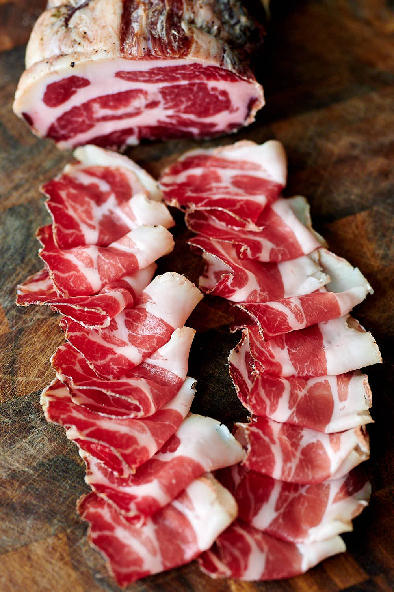

Tony's Gabagool Recipe

Description
Capicola is one of the simpler salumi to make – you don’t need to grind the meat, worry about keeping the fat cold and many other little details like when you make salami or sopressata. However, the outer parts of solid meat muscles tend to dry out in the curing chamber faster than they do with salami.
That’s been my experience, anyway. For a while, I’ve struggled with making my capicola dry evenly from side to side, without harder outer parts and soft, sometimes poorly dried centers. This is a common problem for many home salumi makers.
INGREDIENTS
- 1000 g pork neck coppa
- 27.5 g kosher salt 2.75%
- 2.5 g Cure #2 0.25%
- 0.45 g black pepper cracked; 0.045%
- 0.25 g cloves ground; 0.025%
- 0.1 g bay leaf ground; 0.01%
- 0.15 g cinnamon ground; 0.015%
- 0.1 g nutmeg ground; 0.01%
STEPS
- Trim the meat into a boneless, uniform shape. Make sure there are no cuts in the meat where bacteria could enter, and cut off any loose pieces.
- Weigh the coppa in grams. Divide by 1000, then multiply each ingredient by that number. For example, if your coppa weighs 2650 g, you need to multiply the ingredients specified above by 2.65.
- Mix all the salt and the seasonings together, and rub on the meat. Place the coppa and all the extra salt and seasonings in a vacuum-sealable bag and seal. You can also use a Ziploc bag.
- Place the bag in the fridge for 7 days. Flip the bag every day or so.
- After 7 days have passed, remove the meat from the bag and gently scrape off any excess salt and seasonings.
- Prepare the coppa for hanging by casing (veil, beef bung) and trussing. Poke a lot of small holes all over the surface with a sterilized needle to remove any trapped air.
- Spray with white mold solution.
- Weigh the meat and write it down on a tag. Attach the tag to the meat.
- Hang and dry in the curing chamber for about 7 days as per the schedule below in the note section.
- Mature in the curing chamber at 55F - 57F (13C - 14C) and 80% - 82% for 3+ months.
- When the meat is ready, remove the casing, slice as thin as possible and enjoy.